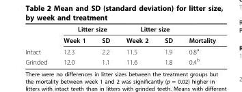
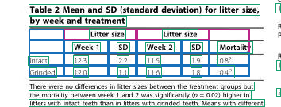
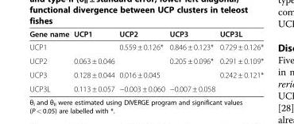
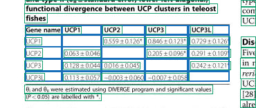
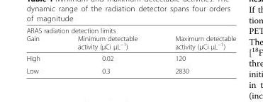
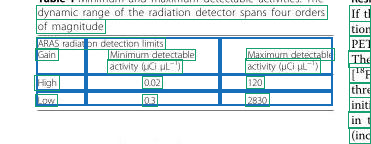

取自原 current 流程（TATR + PP-OCRv6 small）的固定千图实验。原图、结构叠加 PNG、HTML 和 JSON 均逐字节复制；没有重新推理、修正预测或修改评分。
结构图中的蓝框为普通单元格、紫框为跨格单元格、绿框为 OCR 文字框。结构图底图仍然是原始图像，其中看到的印刷文字不是 OCR 导出文本。识别出的文字请看每节下方的实际导出表格。
PMC3366879_table_1 — 原图 Intact 行第一个 SD 为 2.2，实际导出为 22。位置：R3C3。结构拓扑一致，但数值内容错误。


| Litter size | Litter size | Mortality | |||
|---|---|---|---|---|---|
| Week 1 | SD | Week 2 | SD | ||
| Intact | 12.3 | 22 | 11.5 | 1.9 | 0.8° |
| Grinded | 12.0 | 1.1 | 11.6 | 1.8 | 0.4b |
PMC3428666_table_2 — 原图表头 Gene name 和 UCP1 分属两格；导出第一格为 Gene name UCP1，第二格为空。原 OCR 将其合成一个长框，当前分配规则将整个框放入第一列。


| Gene name UCP1 | UCP2 | UCP3 | UCP3L | |
|---|---|---|---|---|
| UCP1 | 0.559±0.126* | 0.846±0.323* | 0.729±0.126* | |
| UCP2 | 0.063±0.046 | |||
| UCP3 | 0.128±0.044 0.016±0.045 | 0.242±0.121* | ||
| UCP3L | 0.113±0.057 |
PMC4783308_table_0 — 参考为 4 行、3 列；当前预测为 3 行、3 列。独立跨列表头 ARAS radiation detection limits 被并入下一层中间列，结构与文字归属同时发生变化。


| Gain | ARAS radiation detection limits Minimum detectable activity (μCi μL-1) |
Maximum detectable activity (μCi μL-1) |
|---|---|---|
| High | 0.02 | 120 |
| Low | 0.3 | 2830 |
来源与许可：SOURCE · CDLA-Permissive-2.0